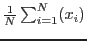
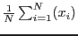

The fractional variability amplitude (F) test (Edelson et. al., 2002, ApJ, 568, 610 and Vaughan et. al., 2003, MNRAS, 345, 1271) is now implemented as of 3rd April 2012.

where,
and  is the number of bins,
is the number of bins,  the net rate for the
the net rate for the  th data point and
is the mean of the net rate (=
) and
th data point and
is the mean of the net rate (=
) and
The error on F is then given by :